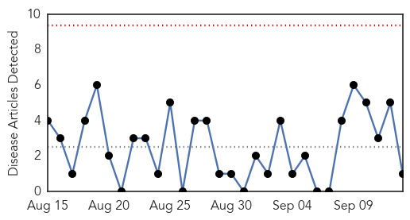
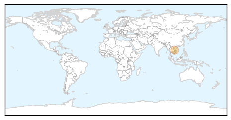
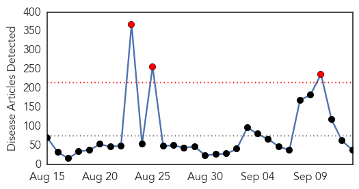

Measles
30-Day Web Trend
0 alerts, 0 warnings

30-Day Twitter Trend
0 alerts, 0 warnings

Article Locations
Article Confidences

Top Articles:
Top Tweets:
-
No tweets found for Sep 13, 2014
Unknown
30-Day Web Trend
3 alerts, 0 warnings

30-Day Twitter Trend
0 alerts, 0 warnings
Article Locations

Article Confidences
Top Articles:
- 0.994
- 29 children now thought to have resurgent D68 virus
- 0.993
- Scary Respiratory Virus Is Sickening Children In NY State
- 0.992
- Serious respiratory illness hits hundreds of kids
- 0.988
- Indian family refuses to receive body of MERS victim
- 0.987
- Pitt scientists collaborate in effort to combat the deadly MERS virus
- 0.987
- At least twelve children in New York state have enterovirus D68, in latest wave of rare respiratory illness
- 0.987
- Indian family refuses to receive body of MERS victim
- 0.984
- Enterovirus Cases Suspected in Connecticut
- 0.977
- State sees increase in respiratory illnesses
- 0.961
- Hospitals see surge in kids’ breathing problems
- 0.944
- Suspected cases of enterovirus D68 investigated in Conn.
- 0.924
- “Stomach flu” outbreak in Yerevan? – newspaper
- 0.917
- Chicago Tribune
- 0.917
- Chicago Tribune
- 0.917
- Chicago Tribune
- 0.917
- Chicago Tribune
- 0.917
- Chicago Tribune
- 0.911
- News, Sports, Jobs, Michigan, Community Information - The Alpena News
- 0.910
- The world windows to Thailand
- 0.906
- 157 sick, up from 11 last year; reports of crypto rise in Florida county
- 0.889
- Family refuses to receive body of MERS victim
- 0.875
- Enterovirus results expected on Monday
- 0.869
- Zebra rabies case highlights wildlife risks, say Kenyan researchers
- 0.866
- Heavy artillery fire heard near Donetsk airport in east Ukraine
- 0.845
- Chorrord Ishkhanutyun: ‘Stomach flu’ outbreak in Yerevan? - Panorama
- 0.659
- The Post
- 0.654
- Hundreds of thousands still stranded in killer Kashmir floods
- 0.647
- Ebarb water tests positive for brain-eating amoeba
- 0.628
- HIV-positive man ordered to stop virus spread
- 0.598
- 200,000 still stranded in Kashmir floods
- 0.558
- GSK Thailand launches 'medicine bank' to help disaster victims
- 0.551
- Nigerian soldiers defeat Boko Haram fighters in key battle
- 0.551
- Kerry seeks Egypt’s help in battling the Islamic State
- 0.532
- Pakistan blows up dikes to save cities from flooding
- 0.528
- 200,000 still stranded in killer Kashmir floods
- 0.515
- Concern over dearth of Ayush medicines in rural hospitals
- 0.515
- Health Ministry sends over 100 tonnes of medicines to J&K
- 0.506
- Trail of destruction as flood water enters Multan villages.
Top Tweets:
- 0.823
- Jornada de limpieza integral en el Hospital de Clínicas: Hoy en horas de la mañana se realizó una jornada de... http://t.co/c3btsPNeb6
- 0.598
- RT: Enterovirus-D68: Wash Hands with Soap + Water. Many sick don't have a fever. Virus lingers on doorknobs + countertops http:…